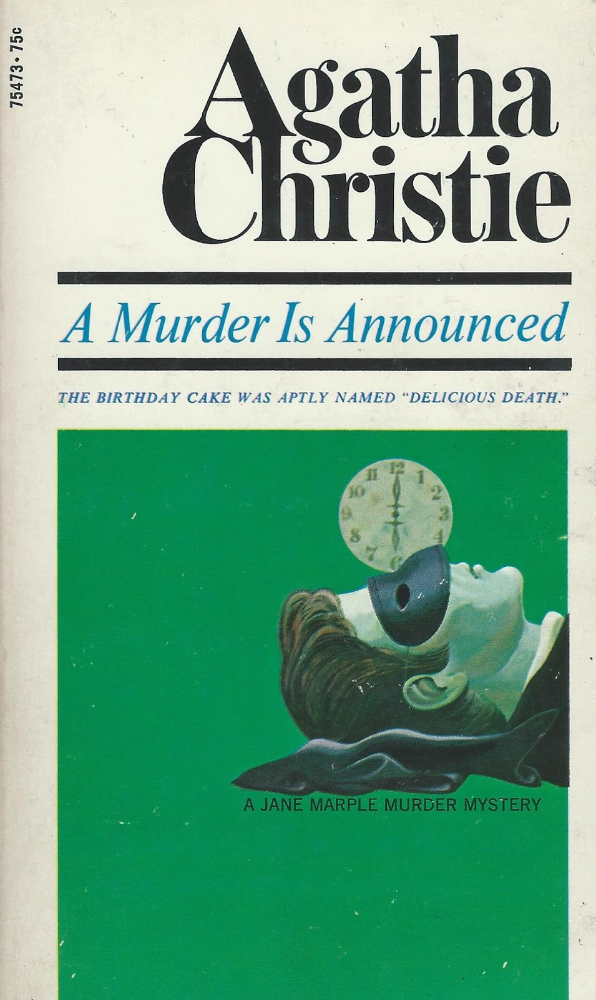

He dazzles the guests with a flashlight, telling them to raise their hands, and three shots are fired. When the lights go back on, Miss Blacklock’s ear is bleeding. The intruder lies dead with a gun beside him on the floor. Dora recognizes the dead man as Rudi Scherz, a Swiss receptionist from the Royal Spa Hotel. Inspector Craddock heads the police investigation. He discovers that Scherz was a petty thief with no record of violent crime. Craddock meets Miss Marple, an older guest at the Royal Spa Hotel who suggests Scherz’s girlfriend, Myrna Harris, is hiding something. When Craddock questions her, Myrna reveals that Scherz was hired by an unknown person to stage a holdup at a party. At Little Paddocks, Craddock interviews Miss Blacklock; the woman always wears a choker of large, presumably fake pearls, which are oddly conspicuous in their discordance with her otherwise rustic attire. She tells Craddock that she will soon inherit a fortune from her former employer, Randall Goedler. Randall left his estate to Letitia Blacklock in the event that his wife, Belle Goedler, died—and Belle now has a terminal illness.
However, if Miss Blacklock dies before Belle, the fortune will pass to Pip and Emma Stamfordis, the twin children of Randall’s estranged sister, Sonia. Craddock worries that Pip and Emma—wherever they are—are behind the murder attempt, as they may want Miss Blacklock dead so they can lay hold of the inheritance. Belle tells Craddock how Letitia gave up her job to care for her sister,Charlotte, when their father died. Charlotte had a “disfiguring” medical condition, and Letitia took her for treatment in Switzerland. When Charlotte died, Letitia returned to England. Miss Marple talks to Dora, who mentions something about two lamps getting swapped at Little Paddocks, but before Dora can elaborate, the conversation is interrupted by Miss Blacklock. Soon afterward, Miss Blacklock holds a birthday party for Dora. After the celebration, Dora has a headache and takes some of Miss Blacklock’s aspirin. She dies in the night from poisoning. Craddock finds some old letters written by Letitia to Charlotte and gives them to Miss Marple, who is staying at the Vicarage.
 While she reads one of the letters by lamplight, the Vicarage cat chews on the lamp cord, and some water spills on it, causing the light to short out. The event causes Miss Marple to have a breakthrough about the case, but she will not reveal her epiphany until the end of the novel. Miss Blacklock receives a letter from a Julia Simmons, saying she will soon arrive at Little Paddocks. Miss Blacklock, realizing the young woman currently staying at Little Paddocks must not be the real Julia, confronts her. The woman admits she was posing as Julia and is actually Patrick’s girlfriend, Emma Stamfordis; the real Julia has been away pursuing an acting career.Emma says she last saw her twin, Pip, when they were three years old. While talking with Miss Hinchcliffe about the night of the holdup, Miss Murgatroyd (the only guest not dazzled by Scherz’s flashlight) remembers that one woman was absent from the drawing-room when the intruder entered. She begins to say who it was, but Miss Hinchcliffe is summoned away by a phone call. When Miss Hinchcliffe returns, Miss Murgatroyd has been strangled. Inspector Craddock gathers the suspects at Little Paddocks. Miss Blacklock’s cook, Mitzi, claims she saw her employer shoot Scherz. Craddock dismisses her and asserts his belief that Edmund Swettenham is secretly Pip and that he tried to kill Miss Blacklock for the inheritance. Phillipa confesses that she is actually Pip, but the scene is interrupted by screaming.
In the kitchen, Miss Blacklock is trying to drown Mitzi in the sink but stops when she hears Dora’s voice—the voice is actually Miss Marple, who has been hiding in the broom closet planning to mimic Dora’s voice to startle Miss Blacklock.Miss Marple reveals that Miss Blacklock is Charlotte, not Letitia, and she is arrested. Miss Marple explains that Charlotte Blacklock had goiter, an enlarged thyroid gland that caused her lower neck to swell. When their father died, Letitia arranged surgery for Charlotte in Switzerland. Shortly afterward, Letitia died of pneumonia, and Charlotte assumed her sister’s identity to inherit Randall Goedler’s fortune. Returning to England, Charlotte covered her surgical scar with a pearl choker. She avoided people who might recognize her, except for Dora, whom she confided in. However, Scherz recognized Charlotte as a former patient from the Swiss hospital where he worked. Fearing that Scherz would expose her identity, Charlotte planned to kill him: She hired Scherz to perform a fake holdup, and when he arrived, she shorted the lights by pouring water on a damaged lamp cord and crept up behind him. Firing two shots over Scherz’s shoulder, she then shot him and cut her ear to look like a gunshot wound. After the shooting, she replaced the damaged lamp with a working lamp.
Miss Blacklock later killed Dora, fearing her friend might accidentally reveal the truth. She strangled Miss Murgatroyd after overhearing her conversation with Miss Hinchcliffe. Miss Marple figured out Miss Blacklock’s lamp ruse after observing the Vicarage lamp shorting out, and when she read the Blacklock sisters’ letters, she noticed differences in spelling that suggested Miss Blacklock was Charlotte, not Letitia. Miss Marple reveals that she and Inspector Craddock enlisted Mitzi and Edmund to help catch Charlotte. As Charlotte tried to drown Mitzi, Miss Marple imitated Dora’s voice to make her release Mitzi and confess. The novel concludes with Pip and Emma (formerly “Phillipa” and “Julia”) inheriting their rightful fortune. Pip and Edmund then marry and settle in Chipping Cleghorn.